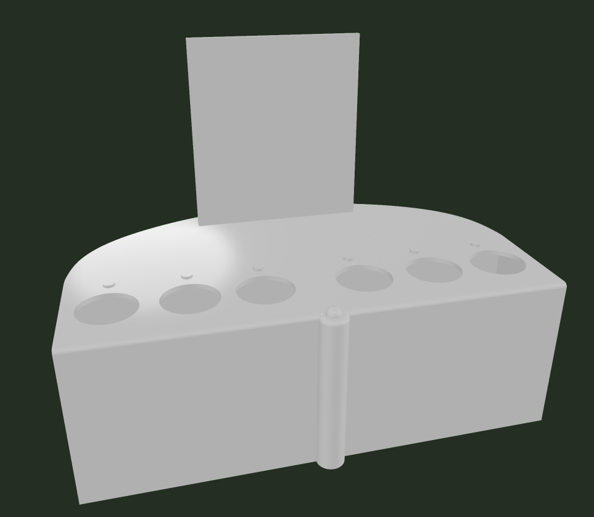
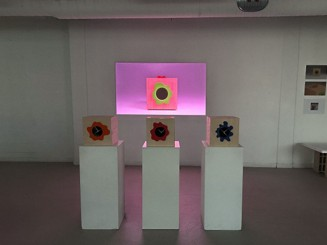
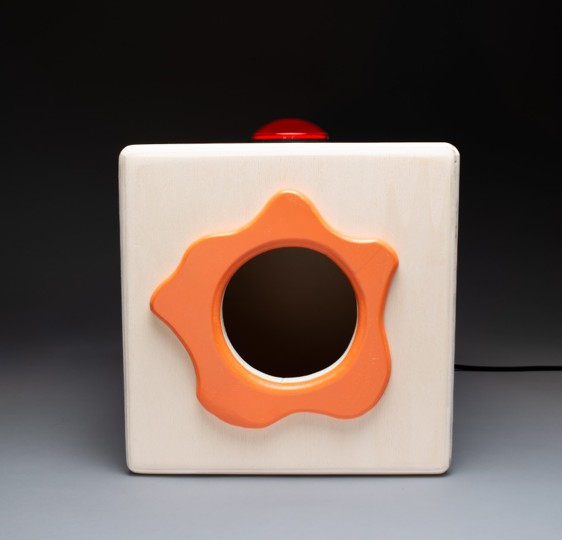

Final Product
The Design in Action
Six photos of the final product.





UX Research Case Study
Designing educational tools to help young people in Garges-lès-Gonesse develop critical thinking online, adopt conscious digital habits, and decode the mechanisms of digital manipulation.
The Challenge
Client: The Cube Garage, an organization working with youth in Garges-lès-Gonesse.
We designed an interactive tool that did more than inform. It helped young people experience the mechanics of online manipulation so they could recognize and resist it.
The research question guided the project: how can we design an experience that encourage active cognitive engagement instead of passive consumption ?
Developing a skeptical, reflective lens toward online content and platform design patterns.
Encouraging mindful digital habits through lived, interactive experience rather than passive instruction.
Helping users identify and name the specific mechanisms platforms use to capture and hold attention.
My Research Process
My role as UX Researcher shaped the design from hypothesis to final pivot. Here's how the research unfolded.
01 — Foundation
Defined research questions based on developmental psychology literature and translated them into testable hypotheses that guided early design decisions.
02 — Iteration
Led iterative user testing with early prototypes, observing how children interacted with the system and identifying points of confusion or engagement.
03 — Observation
Analyzed task comprehension, recall accuracy, completion time, ergonomics, and interaction breakdowns to identify usability issues and refine the design.
04 — Communication
Co-developed research decks for project partners, synthesizing findings and supporting design recommendations with usability evidence and cited literature.
Final Product
Six photos of the final product.



The Outcome
Research findings directly drove the most significant design decision of the project: moving away from a simple tactile interaction toward a timed, memory-based search workflow that deepened cognitive engagement.
This was not a small adjustment. It required a fundamental rethinking of the core mechanic, supported by research evidence and presented to our client through a research-backed design rationale.
As the primary UX researcher on the project, I led the research that informed the final interaction design. The memory-based challenge that became the core mechanic of the game was a direct result of these findings.
"
Sierra Richey — UX Researcher